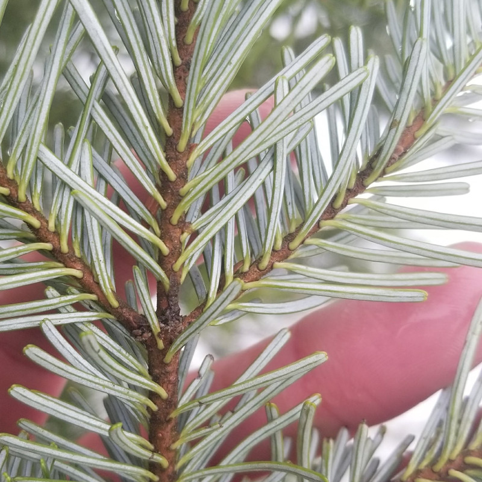

The trees of Dog Mountain
The Dog Mountain hike is a 4.4-kilometre hike that is accessible from the parking lot of Mount Seymour Ski Resort. It’s relatively flat, contained almost entirely between 1,000 and 1,050 metres.

We still needed snowshoes when we went on this hike in March.

I am used to Douglas firs (Pseudotsuga menziesii), western hemlocks (Tsuga heterophylla), and western red cedars (Thuja plicata) from my hikes on lower-elevation trails that start near Deep Cove or Lynn Valley, but none of those trees (except a few western hemlocks) were up at this elevation. Here, there were amabilis firs (Abies amabilis), mountain hemlocks (Tsuga mertensiana), and yellow cedars (Chamaecyparis nootkatensis).
I didn’t get any photos of yellow cedar, but here are some photos of the others and some cues for identifying them.
Amabilis fir (Abies amabilis)
This tree is also called Pacific silver fir.

Mountain hemlock (Tsuga mertensiana)

Western hemlock (Tsuga heterophylla)
There were only a few of these up here. You can tell this apart from mountain hemlock by looking at the needles or the cones.


Reading
Jim Pojar & Andy MacKinnon, Plants of Coastal British Columbia (BC Ministry of Forests and Lone Pine Publishing, 1994).
National Audubon Society Field Guide to North American Trees: Western Region (National Audubon Society, 1980).
The first (Pojar) has a very narrow scope and tells much more about a species’s significance to the region’s ecology and people, both today and historically. The second (Audubon Society) is much broader but helps you to see what things really make a species distinctive, not just distinctive within a region. Both are well-written. Thomas and Turner actually point to the Audubon field guides as examples of classic style: “La Rochefoucauld, Thomas Jefferson, A. J. Liebling, and the authors of the Audubon Guide to North American Birds are all distinct and well-formed individuals, but they are all prototypical classic stylists.”